Woven Weimar Worlds
An interactive data display system that presents multiple alternative and imagined realities of Weimar in a non-linear approach.

With the vision to present multiple alternative realities of a commercial complex in Weimar in an organic, resonating, and non-linear approach, this system allows audiences to juxtapose compositions of alternative extended realities that are imagined based on historical events as well as the current needs of the population in Weimar.
This project invites imaginative speculation on the concepts of time and space in a disruptive yet interweaving manner. To progress towards more expansive worldviews, Woven Weimar Worlds encourages the imagination and invention of new approaches to present multidimensional information across different networks.
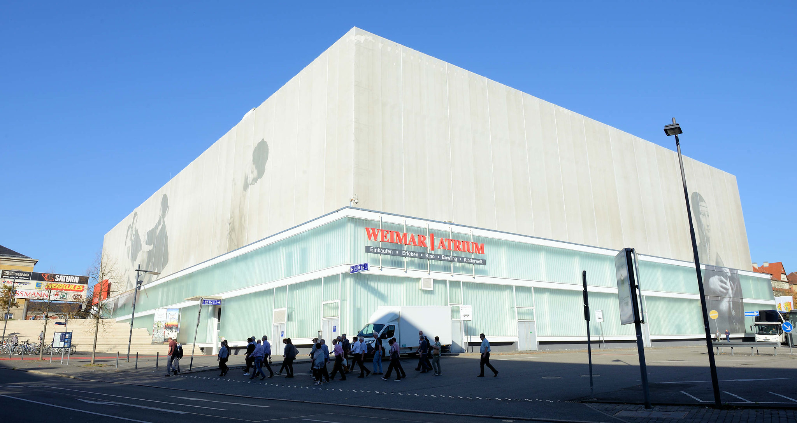
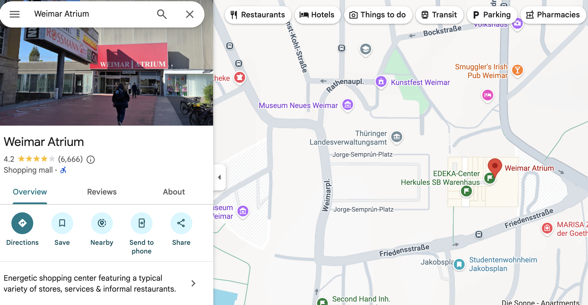
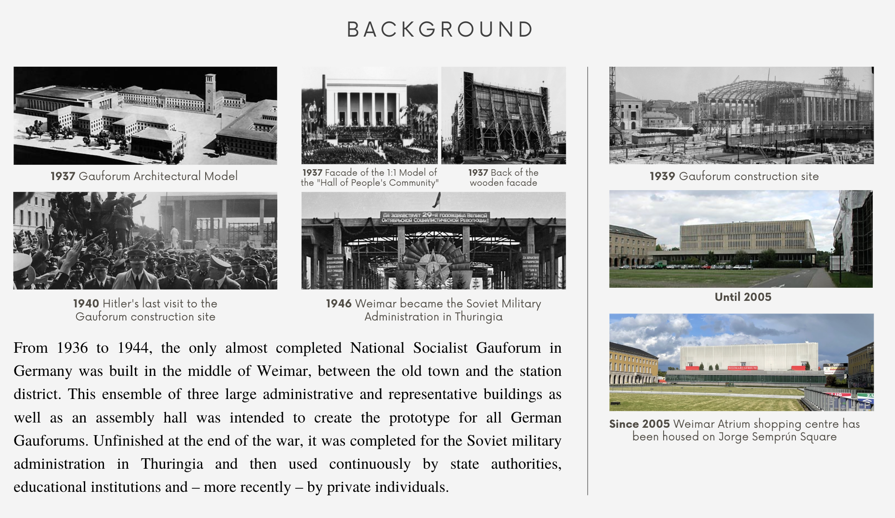
Vision
I would like to create a digital museum experience that would not only showcase the Atrium's historical significance but also invite visitors to actively engage with its narrative through interactive elements. I envisioned a platform where users could explore, solve puzzles, and even craft their own compositions, thereby fostering a deeper connection with the Atrium's storied past. To inform the project, I conducted comprehensive research, delving into the archives of the Weimar City Archive and conducting interviews with local residents to gain diverse perspectives on the Atrium and its historical and socio-cultural significance in the city.
I ask: What could it have been if history had turned the other way?
How would it look if it is not completed in the Soviet times?
What more can this place be?
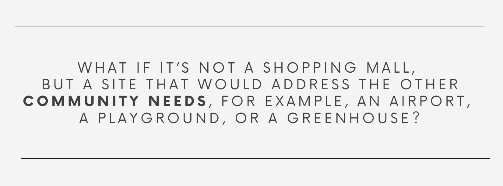
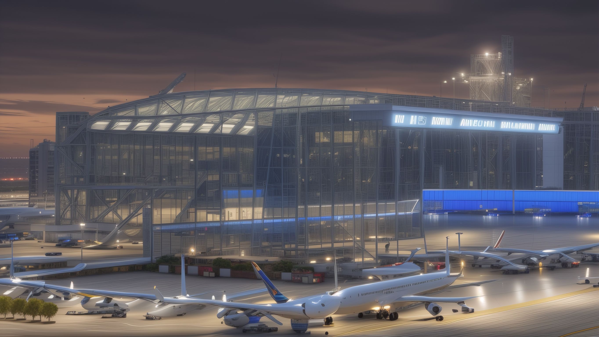
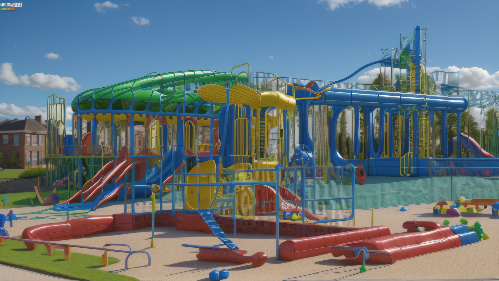
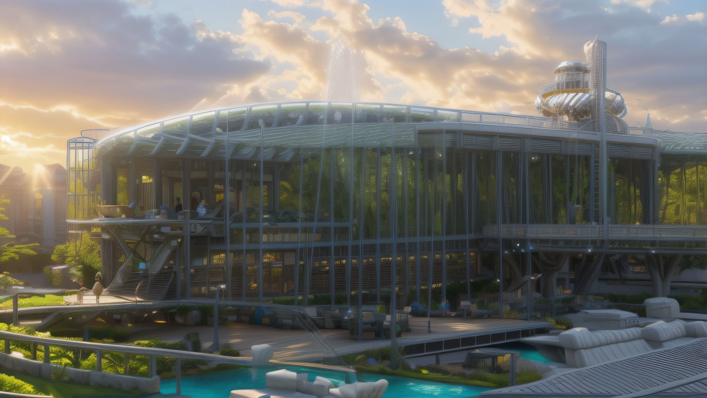
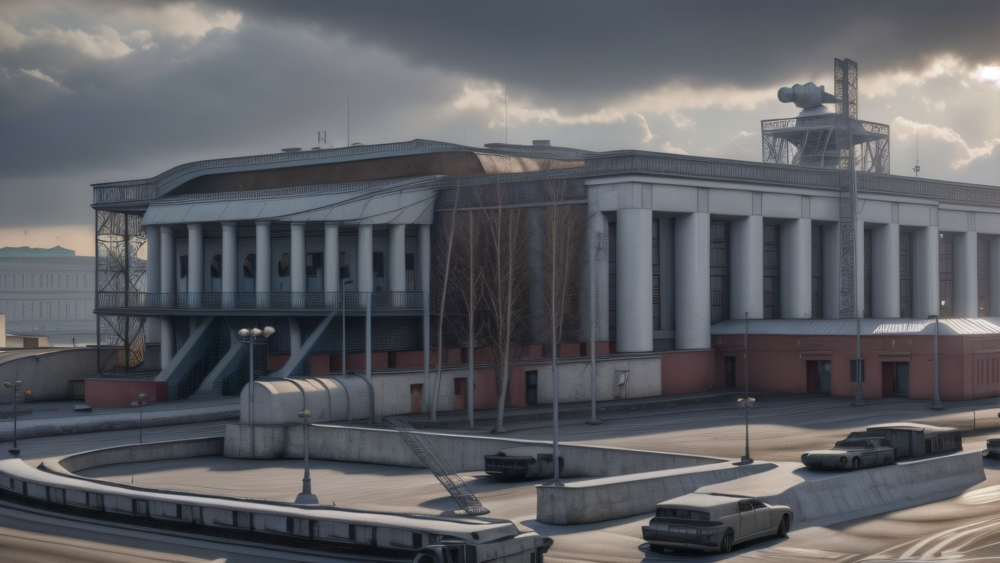
With all the imagined realities ideas, multiple images were generated using Stable Diffusion to juxtapose an interactive puzzle.
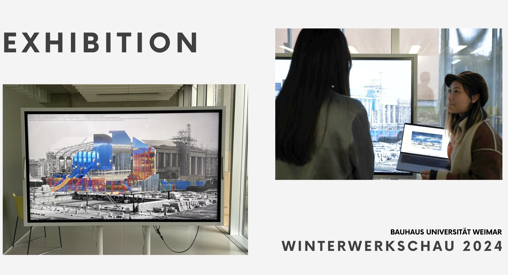
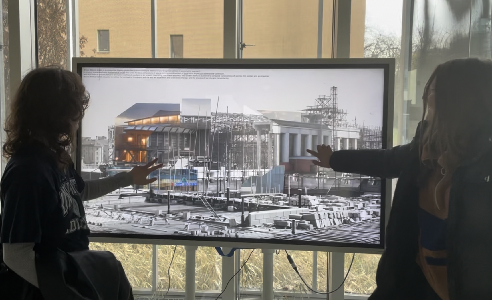
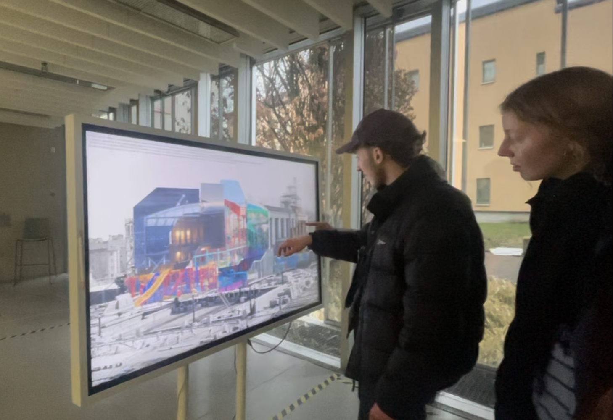